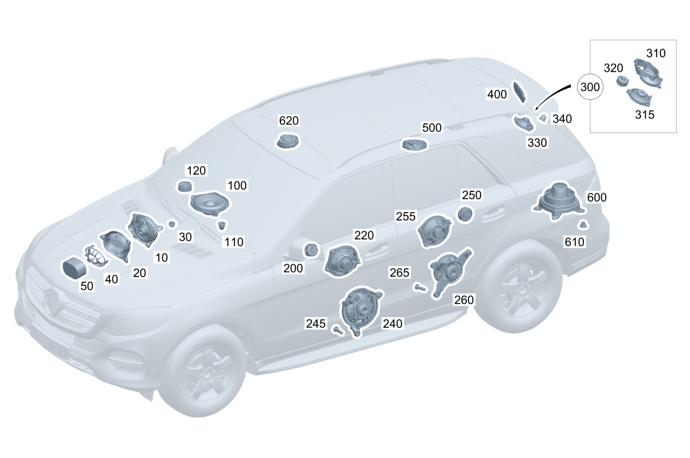

| № | Артикул | Название | Кол. | Примечание |
|---|---|---|---|---|
| 10 | A 167 820 36 00 | Динамик (LAUTSPRECHER) | 1 | Пространство для ног слева |
| 10 | A 167 820 40 00 | Динамик (LAUTSPRECHER) | 1 | Пространство для ног слева |
| 10 | A 167 820 28 00 | Динамик (LAUTSPRECHER) | 1 | Пространство для ног справа |
| 10 | A 167 820 37 00 | Динамик (LAUTSPRECHER) | 1 | Пространство для ног справа |
| 10 | A 167 820 41 00 | Динамик (LAUTSPRECHER) | 1 | Пространство для ног справа |
| 20 | A 167 680 44 07 | Накладка простр. для ног (ABDECKUNG FUSSRAUM) | 1 | Перед |
| 30 | N 000000 008272 | Гайка (MUTTER) | 6 | Динамик в пространстве для ног; M6 |
| 40 | A 167 820 33 01 | Держатель (HALTER) | 1 | Динамик |
| 40 | A 167 820 33 01 | Держатель (HALTER) | 2 | Динамик |
| 50 | A 205 827 00 88 | Шумоизоляция динамика (ABDAEMPFUNG LAUTSPRECHER) | 1 | Динамик |
| 50 | A 205 827 00 88 | Шумоизоляция динамика (ABDAEMPFUNG LAUTSPRECHER) | 2 | Динамик |
| 100 | A 205 820 04 02 | Динамик (LAUTSPRECHER) | 1 | Среднечастотный динамик (в центре панели приборов) |
| 100 | A 205 820 09 02 | Динамик (LAUTSPRECHER) | 1 | Среднечастотный динамик (в центре панели приборов) |
| 100 | A 213 820 11 02 | Динамик (LAUTSPRECHER) | 1 | Среднечастотный динамик (в центре панели приборов) |
| 100 | A 205 820 05 02 | Динамик (LAUTSPRECHER) | 1 | Среднечастотный динамик (в центре панели приборов) |
| 100 | A 213 820 05 03 | Динамик (LAUTSPRECHER) | 1 | Среднечастотный динамик (в центре панели приборов) |
| 100 | A 205 820 05 02 | Динамик (LAUTSPRECHER) | 1 | Среднечастотный динамик (в центре панели приборов) |
| 100 | A 205 820 05 02 | Динамик (LAUTSPRECHER) | 1 | Среднечастотный динамик (в центре панели приборов) |
| 100 | A 213 820 05 03 | Динамик (LAUTSPRECHER) | 1 | Среднечастотный динамик (в центре панели приборов) |
| 110 | A 000 993 29 60 | Сцепной шар (KUGELKOPF) | 3 | Динамик к передней панели |
| 110 | A 000 993 29 60 | Сцепной шар (KUGELKOPF) | 3 | Динамик к передней панели |
| 120 | A 167 820 00 01 | Динамик (LAUTSPRECHER) | 1 | Высокочастотный динамик (в центре панели приборов) |
| 200 | A 213 820 09 00 | Динамик (LAUTSPRECHER) | 1 | В треугольной панели крепления наружного зеркала заднего вида, слева |
| 200 | A 167 820 30 02 | Динамик (LAUTSPRECHER) | 1 | В треугольной панели крепления наружного зеркала заднего вида, слева |
| 200 | A 167 820 00 01 | Динамик (LAUTSPRECHER) | 1 | В треугольной панели крепления наружного зеркала заднего вида, слева |
| 200 | A 213 820 09 00 | Динамик (LAUTSPRECHER) | 1 | В треугольной панели крепления наружного зеркала заднего вида, слева |
| 200 | A 223 820 75 00 | Динамик (LAUTSPRECHER) | 1 | В треугольной панели крепления наружного зеркала заднего вида, слева |
| 200 | A 213 820 09 00 | Динамик (LAUTSPRECHER) | 1 | В треугольной панели крепления наружного зеркала заднего вида, справа |
| 200 | A 167 820 30 02 | Динамик (LAUTSPRECHER) | 1 | В треугольной панели крепления наружного зеркала заднего вида, справа |
| 200 | A 167 820 00 01 | Динамик (LAUTSPRECHER) | 1 | В треугольной панели крепления наружного зеркала заднего вида, справа |
| 200 | A 213 820 09 00 | Динамик (LAUTSPRECHER) | 1 | В треугольной панели крепления наружного зеркала заднего вида, справа |
| 200 | A 223 820 75 00 | Динамик (LAUTSPRECHER) | 1 | В треугольной панели крепления наружного зеркала заднего вида, справа |
| 220 | A 167 820 25 01 | Динамик (LAUTSPRECHER) | 1 | Среднечастотный динамик в передней левой двери |
| 220 | A 167 820 27 01 | Динамик (LAUTSPRECHER) | 1 | Среднечастотный динамик в передней левой двери |
| 220 | A 213 820 11 02 | Динамик (LAUTSPRECHER) | 1 | Среднечастотный динамик в передней левой двери |
| 220 | A 167 820 29 04 | Динамик (LAUTSPRECHER) | 1 | Среднечастотный динамик в передней левой двери |
| 220 | A 167 820 25 01 | Динамик (LAUTSPRECHER) | 1 | Среднечастотный динамик в передней правой двери |
| 220 | A 167 820 27 01 | Динамик (LAUTSPRECHER) | 1 | Среднечастотный динамик в передней правой двери |
| 220 | A 213 820 11 02 | Динамик (LAUTSPRECHER) | 1 | Среднечастотный динамик в передней правой двери |
| 220 | A 167 820 29 04 | Динамик (LAUTSPRECHER) | 1 | Среднечастотный динамик в передней правой двери |
| 240 | A 167 820 21 01 | Динамик (LAUTSPRECHER) | 1 | Низко\-/среднечастотный динамик в передней левой двери |
| 240 | A 167 820 22 01 | Динамик (LAUTSPRECHER) | 1 | Низко\-/среднечастотный динамик в передней правой двери |
| 245 | N 000000 002161 | Винт с 6-гр. глвк (SECHSRUNDSCHRAUBE) | 3 | Крепление динамика, дверь слева спереди |
| 245 | N 000000 002161 | Винт с 6-гр. глвк (SECHSRUNDSCHRAUBE) | 3 | Крепление динамика, дверь справа спереди |
| 250 | A 167 820 30 02 | Динамик (LAUTSPRECHER) | 1 | Задняя дверь слева (высокочастотный динамик) |
| 250 | A 167 820 00 01 | Динамик (LAUTSPRECHER) | 1 | Задняя дверь слева (высокочастотный динамик) |
| 250 | A 223 820 75 00 | Динамик (LAUTSPRECHER) | 1 | Задняя дверь слева (высокочастотный динамик) |
| 250 | A 167 820 30 02 | Динамик (LAUTSPRECHER) | 1 | Задняя дверь справа (высокочастотный динамик) |
| 250 | A 167 820 00 01 | Динамик (LAUTSPRECHER) | 1 | Задняя дверь справа (высокочастотный динамик) |
| 250 | A 223 820 75 00 | Динамик (LAUTSPRECHER) | 1 | Задняя дверь справа (высокочастотный динамик) |
| 255 | A 167 820 26 01 | Динамик (LAUTSPRECHER) | 1 | Низкосреднечастотный динамик двери сзади слева |
| 255 | A 167 820 27 01 | Динамик (LAUTSPRECHER) | 1 | Низкосреднечастотный динамик двери сзади слева |
| 255 | A 213 820 11 02 | Динамик (LAUTSPRECHER) | 1 | Низкосреднечастотный динамик двери сзади слева |
| 255 | A 167 820 29 04 | Динамик (LAUTSPRECHER) | 1 | Низкосреднечастотный динамик двери сзади слева |
| 255 | A 167 820 26 01 | Динамик (LAUTSPRECHER) | 1 | Низкосреднечастотный динамик двери сзади справа |
| 255 | A 167 820 27 01 | Динамик (LAUTSPRECHER) | 1 | Низкосреднечастотный динамик двери сзади справа |
| 255 | A 213 820 11 02 | Динамик (LAUTSPRECHER) | 1 | Низкосреднечастотный динамик двери сзади справа |
| 255 | A 167 820 29 04 | Динамик (LAUTSPRECHER) | 1 | Низкосреднечастотный динамик двери сзади справа |
| 260 | A 167 820 23 01 | Динамик (LAUTSPRECHER) | 1 | Динамик задней двери слева |
| 260 | A 167 820 24 01 | Динамик (LAUTSPRECHER) | 1 | Динамик задней двери справа |
| 265 | N 000000 002161 | Винт с 6-гр. глвк (SECHSRUNDSCHRAUBE) | 2 | Крепление динамика, дверь слева сзади |
| 265 | N 000000 002161 | Винт с 6-гр. глвк (SECHSRUNDSCHRAUBE) | 2 | Крепление динамика, дверь справа сзади |
| 300 | A 167 820 54 01 | Держатель (HALTER) | 1 | К крайней задней стойке кузова, слева |
| 300 | A 167 820 56 01 | Держатель (HALTER) | 1 | К крайней задней стойке кузова, справа |
| 310 | A 167 820 55 01 | - Держатель (HALTER) | 1 | К крайней задней стойке кузова, слева |
| 310 | A 167 820 57 01 | - Держатель (HALTER) | 1 | К крайней задней стойке кузова, справа |
| 315 | A 213 820 11 02 | - Динамик (LAUTSPRECHER) | 1 | К крайней задней стойке кузова, слева |
| 315 | A 213 820 11 02 | - Динамик (LAUTSPRECHER) | 1 | К крайней задней стойке кузова, справа |
| 320 | A 167 820 00 01 | - Динамик (LAUTSPRECHER) | 1 | К крайней задней стойке кузова, слева |
| 320 | A 167 820 00 01 | - Динамик (LAUTSPRECHER) | 1 | К крайней задней стойке кузова, справа |
| 330 | A 205 820 04 02 | Динамик (LAUTSPRECHER) | 1 | К крайней задней стойке кузова, слева |
| 330 | A 205 820 04 02 | Динамик (LAUTSPRECHER) | 1 | К крайней задней стойке кузова, справа |
| 340 | A 231 818 00 20 | Эластомерная опора (ELASTOMERLAGER) | 3 | Крайняя задняя стойка слева |
| 340 | A 231 818 00 20 | Эластомерная опора (ELASTOMERLAGER) | 3 | Крайняя задняя стойка справа |
| 400 | A 167 680 94 05 | Обивка крышки (BEZUG ABDECKUNG) | 1 | К крайней задней стойке кузова, слева |
| 400 | A 167 680 94 05 | Обивка крышки (BEZUG ABDECKUNG) | 1 | К крайней задней стойке кузова, справа |
| 500 | A 213 820 10 02 | Динамик (LAUTSPRECHER) | 2 | Крыша, область средней стойки кузова |
| 600 | A 167 820 65 01 | Динамик (LAUTSPRECHER) | 1 | Сабвуфер |
| 600 | A 167 820 92 02 | Динамик (LAUTSPRECHER) | 1 | Сабвуфер |
| 610 | N 000000 008296 | ГАЙКА КОМБИНИРОВАННАЯ (KOMBIMUTTER) | 4 | Крепление сабвуфера; M6 |
| 620 | A 223 820 32 03 | Динамик (LAUTSPRECHER) | 2 | В потолочной блок\-панели управления |
Позиций: 81 · подписано на схемах: 81 · колесо — плавный зум в курсор, перетаскивание — пан, двойной клик — зум, клик по артикулу — скопировать.